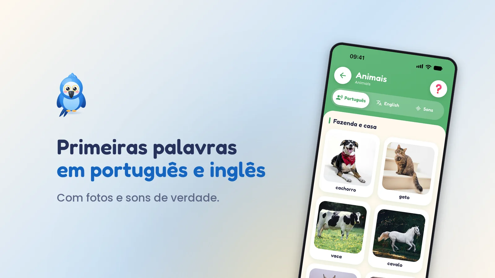
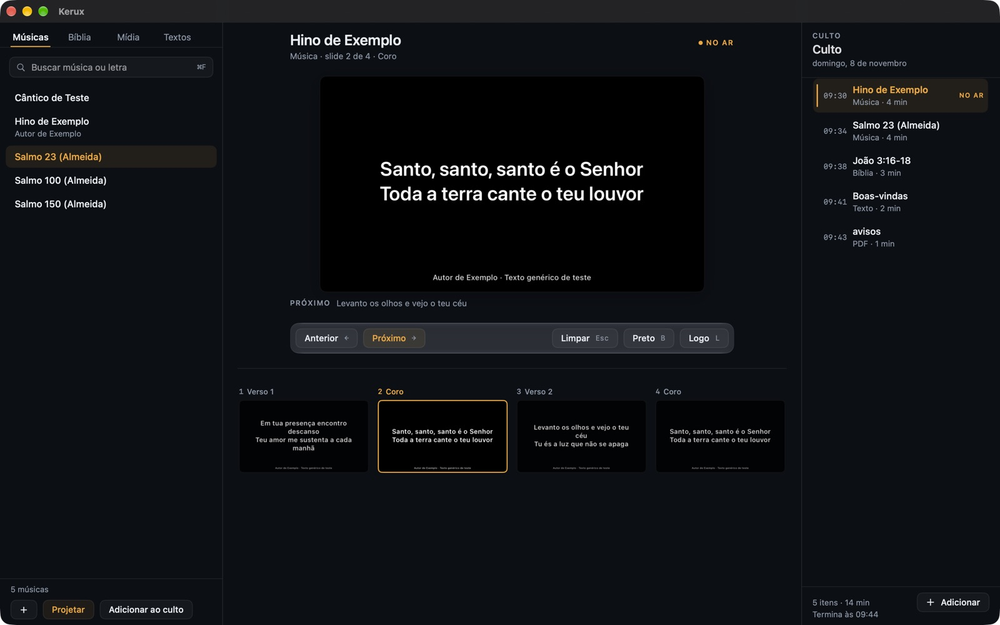
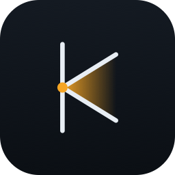

Aplicativos que a gente publica, mantém e responde por.
A Orddum desenvolve aplicativos para iOS e Android: produtos próprios nas duas lojas, do desenho à ficha da loja.
Portfólio
Produtos próprios, do desenho à ficha da loja
Escolha um app para ver as telas, o vídeo e onde baixar.
Lastro
DisponívelFinanças pessoais · iOS e Android
Controle financeiro pessoal em que os dados nunca passam por servidor: sem cadastro, sem nuvem, e dá para usar a dois sem nada no meio. Nasceu de uma planilha mantida por catorze anos.
- O mês inteiro numa tela: previsto e realizado lado a lado, e o que sobrou
- Use a dois: o mesmo caderno em dois celulares, pela rede da casa, cifrado e sem servidor
- Cadernos separados (a casa, a empresa, o pessoal), cartões com fatura, parcelas numeradas e despesas recorrentes
- Busca que atravessa o histórico inteiro: «quanto já gastei com isso?»
- Exportação completa e gratuita — o backup é seu, num arquivo que você leva
- Traga seu histórico: um modelo para a sua IA converter planilha ou extratos no arquivo que o app importa
IPI App
DisponívelGestão de igreja · iOS e Android
Tudo da igreja, num lugar só. O aplicativo da Igreja Presbiteriana de Itabira reúne o que antes se espalhava entre boletim impresso, mural e grupos de mensagem.
- Agenda da semana, avisos e boletim num lugar só
- Grupos e sociedades internas
- Hinário com busca e as confissões de fé
- Gestão feita pela própria liderança, sem depender de desenvolvedor

Ararinha
DisponívelLivro falante infantil · iOS e Android
Primeiras palavras em português e inglês, com fotos e sons de verdade. Um livro para crianças de 2 a 6 anos: toca na foto e ouve o nome em português ou em inglês, ou o som de verdade. Sem anúncio, sem conta e sem rastreamento, e funciona sem internet.
- 25 temas e mais de 650 fotos reais, escolhidas uma a uma
- Sons de verdade: bichos, veículos e 37 instrumentos
- O Encontre, um jogo sem pontos nem relógio, e a Lousa para traçar letras e números
- Alfabeto, números, animais e música grátis; o resto numa compra única, liberada pelo adulto
Faço Agora
DisponívelTarefas · iOS e Android
Sorteia, da sua lista, uma tarefa que cabe no tempo livre que você tem agora. Sem conta e sem cadastro: suas tarefas ficam só no aparelho. Para maiores de 13 anos.
- Diga se tem 5 minutos, 15, 30 ou mais, e o app escolhe uma tarefa desse tamanho
- Dias seguidos sem culpa: um dia de folga por semana não quebra a sequência
- Um lembrete por dia, no horário que você escolher
- Grátis, com um anúncio de banner no rodapé
Software
Para o Mac da mesa de som da igreja
Além dos apps de celular, a Orddum faz software de desktop. O primeiro é o Kerux.
Kerux
Projeção para igrejas, nativa de Mac, em português.
Letras, versículos, mídia e apresentações no telão, e o mesmo conteúdo na transmissão, operado por um voluntário com o teclado ou com o celular.
- Bíblia navegável e músicas a três toques do telão.
- PDF e apresentações passam no telão, mesmo sem PowerPoint ou Keynote.
- Transmissão resolvida: texto com fundo transparente no OBS e legenda ao vivo no YouTube.
- Sem conta e sem nuvem: tudo fica no Mac, funciona sem internet.
Versão de testes, gratuita. macOS 14 ou mais novo, chip Apple. O Kerux Controle Remoto é o app de celular do Kerux, em teste.

Como trabalhamos
Um código, duas lojas e só o que cada app precisa
Um código para iOS e Android
Uma base de código em Flutter para as duas plataformas, do desenho à ficha da loja, incluindo o que ninguém vê: classificação etária, declaração de dados e a revisão de cada loja.
Feito para durar
A regra de negócio fica separada da tela e do banco de dados. É o que permite trocar o que está em volta sem reescrever o que importa.
Servidor só quando precisa
O IPI App tem servidor porque uma igreja inteira compartilha os mesmos dados. O Lastro não tem nenhum, porque as finanças de uma casa não precisam sair dela.
Privacidade é decisão de projeto
No Lastro, telemetria e relatório de erro foram removidos de propósito, e o anúncio é não personalizado. O que o app não coleta é tão desenhado quanto o que ele mostra.
Contato e suporte
Fale direto com quem faz
Suporte dos apps, dúvidas sobre privacidade ou um projeto novo — qualquer caminho abaixo chega na mesma pessoa.
Privacidade e termos
Cada produto tem a sua política
Não existe uma política genérica da Orddum que sirva para todos: o Lastro não tem servidor nem cadastro, o IPI App tem os dois, e o Ararinha não coleta nada da criança. Uma política única teria que mentir sobre algum deles.
- Lastro Política de PrivacidadeTermos de Uso
- IPI App Política de PrivacidadeExcluir a contaTermos de Uso
- Ararinha Política de Privacidade
- Faço Agora Política de PrivacidadeTermos de Uso
-

Kerux Política de Privacidade - Kerux Controle Remoto Política de Privacidade